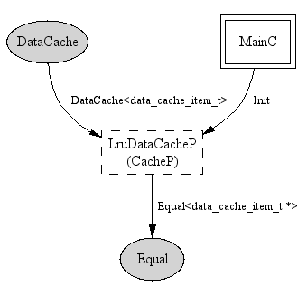

Component: LruDataCacheC
generic configuration LruDataCacheC(typedef data_cache_item_t, uint8_t size)
A LRU data cache that stores data items, where an insert operation
indicates "use".
- Author:
-
Ryan Stinnett
Provides
Uses
interface
Equal<data_cache_item_t *>
Wiring
